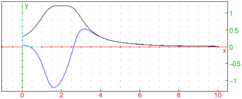

24.3.3 Commands for global display features
Adding a legend.
The legend
command creates a legend on the screen.
-
legend takes two mandatory arguments and one optional
argument:
-
pos, either be a point or a
list of two integers giving the number of pixels from the upper left
hand corner, specifying the position to put the legend.
- legend, a string or a variable.
- Optionally, quad, which can be one of
quadrant1, quadrant2, quadrant3 or
quadrant4. This indicates where to put the legend
relative to the point (by default, it is quadrant1).
- legend(pos,legend ⟨,quad ⟩)
draws the legend at the requested position.
Example
To put “hello” to the upper left of the point
(1,1):
| legend(1+i,"hello",quadrant3) |
or:
| legend(1+i,quadrant3,"hello") |

Changing various features.
The display
or color
command changes the properties of graphics; the
same properties that can also be changed with the display and
color parameters (see Section 24.3.2).
The display or color command draws objects with specified
properties.
-
display takes one mandatory arguments and one
optional argument:
-
Optionally, command, a command to draw an object.
- arg, which can be a possible value of the
display parameter (see Section 24.3.2) or
hidden_name.
- display(command,arg) draws the
object given by command with the property given by
arg, or draws the object without a label if
arg=hidden_name.
- display(arg) applies the property
given by arg to all subsequent objects; display(0)
resets the display parameters.
Examples
| display(1+i/2,2+i,1/2+2i,red) |
or:
| triangle(1+i/2,2+i,1/2+2i,display=red) |
| triangle(0,1,1+i,display=filled) |
or:
| display(triangle(0,1,1+i),filled) |
By default, if a geometric object is named,
the drawing is labeled.
| Triangle:=triangle(0,1,1+i) |
Creating the object with the display command and the
hidden_name argument will draw it without the label.
| display(Triangle,hidden_name) |